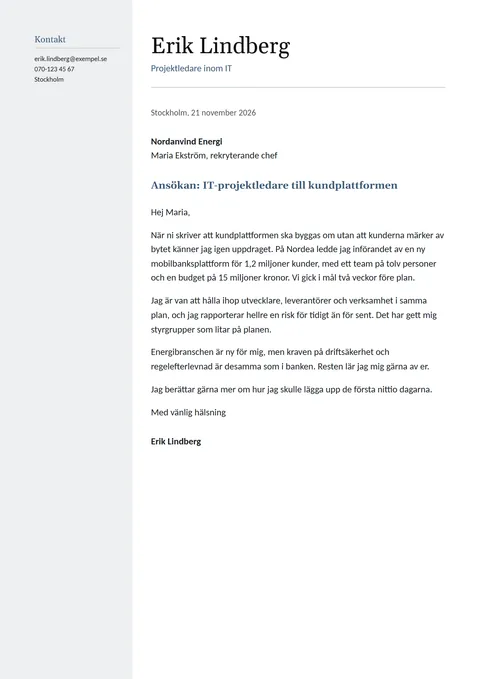
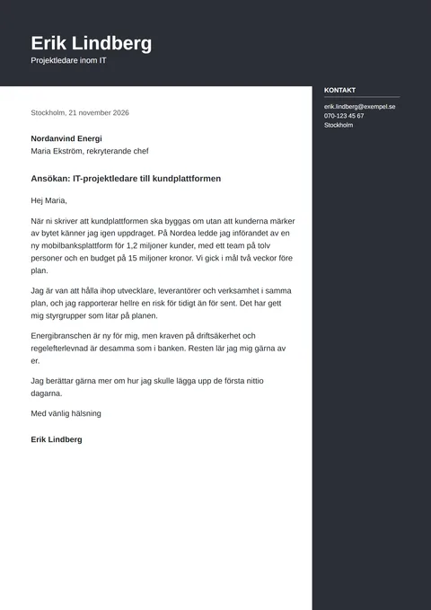
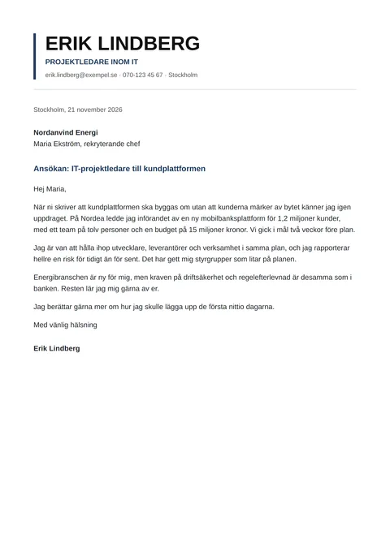
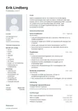
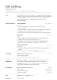
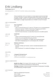

<!-- titel: Skiss Personligt brev | rum: brev -->
<style>
  main img { height: auto; }
  .vagsteg li { align-content: start; }
  .vagsteg li .sb p { grid-column: auto; }
  /* hjälten: brevet med kraven utmärkta, annonsen bredvid */
  .kravbild { position: relative; width: 100%; max-width: 500px; margin: 0 auto; padding: 46px 0 34px 13%; }
  .kravbild .ark { aspect-ratio: 1 / 1.36; transform: rotate(1.2deg); }
  .kravbild .annons { top: auto; bottom: 0; width: 47%; }
  .kravbild .annons li { white-space: nowrap; }
  .kravbild .svav { right: -6px; top: 0; --rot: 3deg; transform: rotate(3deg); }
  .kravbild .svav .stor { font-size: 38px; white-space: nowrap; }
  .kn { display: inline-grid; place-items: center; width: 1.7em; height: 1.7em; margin-right: .35em; border-radius: .45em; background: var(--ton-ink); color: #fff; font-family: var(--disp); font-style: normal; font-weight: 800; font-size: .92em; vertical-align: baseline; }
  .annons li .kn { margin: 0 0 0 auto; background: var(--ton); color: var(--ton-ink); font-size: 10.5px; width: 18px; height: 18px; border-radius: 6px; }
  .annons li.ej .kn { background: none; border: 1.5px dashed var(--koppar); color: var(--koppar-ink); }
  @media (max-width: 999px) { .kravbild .ark { aspect-ratio: 1 / 1.6; } .kravbild .annons { width: 56%; max-width: 250px; padding: 12px; font-size: 12px; } .kravbild .annons li { gap: 5px; } }
  @media (min-width: 1000px) { .kravbild { padding: 56px 0 30px 14%; margin-right: 0; } .kravbild .svav { right: -26px; } .kravbild .svav .stor { font-size: 54px; } }

  /* första handlingen: annonsen in, första stycket ut */
  .prova { display: grid; gap: 24px; }
  .falt { display: grid; gap: 12px; padding: 16px; border-radius: 22px; border: 2px solid var(--kant-stark); background: var(--golv); }
  .falt label { font-size: 12.5px; font-weight: 700; letter-spacing: .09em; text-transform: uppercase; color: var(--ton-ink); }
  .falt .ruta { min-height: 132px; padding: 14px 16px; border-radius: 16px; border: 2px solid var(--kant-stark); background: var(--papper); color: var(--ink-3); font-size: 15.5px; line-height: 1.5; }
  .falt .ruta b { display: block; color: var(--ink-1); font-weight: 600; }
  .falt .rad { display: flex; flex-wrap: wrap; align-items: center; gap: 12px 16px; }
  .far { display: grid; gap: 10px; align-content: start; }
  .far li { display: grid; grid-template-columns: 34px 1fr; gap: 12px; align-items: center; padding: 12px 14px; border-radius: 16px; background: var(--golv); font-size: 15px; font-weight: 600; }
  .far li i { display: grid; place-items: center; width: 34px; height: 34px; border-radius: 11px; background: var(--ton-ink); color: #fff; }
  .far li i svg { width: 18px; height: 18px; }
  .far li span { display: block; font-weight: 400; font-size: 13.5px; color: var(--ink-3); }
  @media (min-width: 900px) { .prova { grid-template-columns: 1.15fr 1fr; gap: 40px; } .falt { padding: 20px; } }

  /* stegens bilder */
  .sb { width: 100%; display: grid; gap: 8px; }
  .sb-cv { grid-template-columns: 54px 1fr; align-items: center; gap: 12px; padding: 10px; border-radius: 14px; background: var(--papper); border: 2px solid var(--kant); text-align: left; }
  .sb-cv img { width: 54px; border-radius: 4px; box-shadow: 0 2px 0 rgba(0, 0, 0, .14); }
  .sb-cv small { display: block; font-size: 11.5px; font-weight: 700; letter-spacing: .08em; text-transform: uppercase; color: var(--ink-3); }
  .sb-cv b { display: block; font-size: 14px; line-height: 1.25; }
  .sb-cv u { font-size: 13px; font-weight: 600; text-underline-offset: 3px; }
  .sb-annons { padding: 12px; border-radius: 14px; background: var(--papper); border: 2px solid var(--kant); text-align: left; }
  .sb-annons i { display: block; height: 5px; margin-top: 6px; border-radius: 3px; background: #DCDAD5; }
  .sb-annons i.h { background: var(--ljus); width: 62%; }
  .sb-chips { display: flex; flex-wrap: wrap; gap: 6px; margin-top: 10px; }
  .sb-chips span { height: 26px; padding: 0 9px; border-radius: 8px; background: var(--ton); color: var(--ton-ink); font-size: 12.5px; font-weight: 700; display: inline-grid; place-items: center; }
  .sb-mallar { grid-template-columns: repeat(3, 1fr); align-items: end; }
  .sb-mallar img { border-radius: 3px; box-shadow: 0 3px 0 rgba(0, 0, 0, .14); }
  .sb-mallar img.vald { outline: 3px solid var(--koppar); outline-offset: 2px; }
  .sb-gor { display: flex; flex-wrap: wrap; gap: 8px; justify-content: center; }
  .sb-gor span { height: 38px; padding: 0 13px; border-radius: 12px; background: var(--papper); border: 2px solid var(--kant-stark); border-bottom-width: 4px; font-size: 13.5px; font-weight: 700; display: inline-grid; place-items: center; }
  .sb-gor span.k { background: var(--koppar); border-color: var(--koppar-klack); color: var(--koppar-text); }

  /* de fem tonerna: samma öppning, fem röster */
  .toner { margin-top: 44px; padding: 22px 18px 24px; border-radius: var(--r-stor); background: var(--ton); }
  .toner-huvud { display: flex; flex-wrap: wrap; align-items: end; gap: 10px 24px; }
  .toner-huvud p:last-child { margin-left: auto; }
  .sprak { display: inline-flex; padding: 4px; border-radius: 14px; background: var(--papper); border: 2px solid var(--kant-stark); font-size: 14px; font-weight: 700; }
  .sprak span { height: 32px; padding: 0 12px; border-radius: 10px; display: inline-grid; place-items: center; color: var(--ink-3); }
  .sprak span.pa { background: var(--ton-ink); color: #fff; }
  .tonrad { display: grid; gap: 10px; margin-top: 20px; }
  .tonkort { display: grid; gap: 10px; align-content: start; padding: 14px; border-radius: 18px; background: var(--papper); border: 2px solid var(--kant-stark); border-bottom-width: 5px; min-width: 0; }
  .tonkort.vald { border-color: var(--vagg); }
  .tonkort b { display: block; font-family: var(--disp); font-weight: 800; font-size: 18px; letter-spacing: -0.01em; }
  .tonkort small { display: block; font-size: 13.5px; color: var(--ink-3); }
  .tonkort q { display: block; quotes: none; padding: 10px 12px; border-radius: 12px; background: var(--golv); font-family: Georgia, 'Times New Roman', serif; font-size: 14.5px; line-height: 1.45; color: var(--ink-1); }
  .tonauto { display: flex; flex-wrap: wrap; align-items: center; gap: 8px 14px; margin-top: 10px; padding: 14px 16px; border-radius: 18px; background: var(--koppar-mjuk); color: var(--koppar-text); font-size: 15px; }
  .tonauto b { font-family: var(--disp); font-size: 17px; }
  @media (min-width: 700px) { .tonrad { grid-template-columns: repeat(2, 1fr); } }
  @media (min-width: 1100px) { .toner { padding: 40px; } .tonrad { grid-template-columns: repeat(5, 1fr); gap: 12px; } }

  /* mallarna: riktiga miniatyrer */
  .mallhuvud { display: grid; gap: 28px; align-items: center; }
  .par { position: relative; width: 100%; max-width: 440px; margin: 0 auto; padding: 0 0 18px; display: grid; grid-template-columns: 1fr 1fr; gap: 0; }
  .par .ark { padding: 9% 9%; box-shadow: 0 6px 0 rgba(58, 25, 48, .2), 0 20px 40px rgba(58, 25, 48, .18); }
  .par .ark:first-of-type { transform: rotate(-4deg) translate(6%, 4%); }
  .par .ark:last-of-type { transform: rotate(3deg) translate(-4%, 0); z-index: 2; }
  .par .ark .namn { font-size: clamp(12px, 1.5vw, 17px); }
  .par .ark .kontakt, .par .ark .rad, .par .brevark p { font-size: clamp(5px, .55vw, 6.5px); }
  .par .ark h5 { font-size: clamp(7px, .75vw, 9px); }
  .par .nal { display: none; }
  .par .ark .del.vald { outline: 0; background: none; }
  .par .lapp { position: absolute; z-index: 3; height: 30px; padding: 0 12px; border-radius: 999px; background: var(--vagg); color: var(--vagg-ink); font-size: 13px; font-weight: 700; display: inline-grid; place-items: center; box-shadow: 0 3px 0 var(--vagg-3); }
  .par .lapp.a { left: 4%; top: -8px; }
  .par .lapp.b { right: 2%; bottom: 0; background: var(--koppar); color: var(--koppar-text); box-shadow: 0 3px 0 var(--koppar-klack); }
  @media (min-width: 1000px) { .mallhuvud { grid-template-columns: 1.1fr .9fr; gap: 64px; } .par { margin-right: 0; } }
  .mallar { display: grid; grid-template-columns: repeat(2, minmax(0, 1fr)); gap: 12px; margin-top: 32px; }
  .mall { display: grid; gap: 4px; align-content: start; padding: 10px 10px 14px; background: var(--papper); border: 2px solid var(--kant-stark); border-bottom-width: 6px; border-radius: var(--r-kort); min-width: 0; }
  .mall .bild { padding: 9% 11% 0; border-radius: 14px; background: var(--ton); overflow: hidden; margin-bottom: 8px; }
  .mall .bild img { width: 100%; border-radius: 3px 3px 0 0; box-shadow: 0 0 0 1px rgba(58, 25, 48, .08), 0 8px 20px rgba(58, 25, 48, .2); }
  .mall .h3 { font-size: 19px; padding: 0 4px; }
  .mall p { font-size: 14px; color: var(--ink-2); padding: 0 4px; }
  .mall .rad { display: flex; flex-wrap: wrap; align-items: center; gap: 6px 8px; margin-top: 6px; padding: 0 4px; font-size: 12.5px; font-weight: 600; color: var(--ink-3); }
  .mall .chip { height: 24px; padding: 0 9px; font-size: 12px; }
  .mall-mer { position: relative; overflow: hidden; isolation: isolate; align-content: end; padding: 18px; background: var(--vagg); color: var(--vagg-ink); border-color: var(--vagg-3); text-decoration: none; min-height: 250px; }
  .mall-mer::before { content: ''; position: absolute; z-index: -1; right: -30%; top: -22%; width: 90%; aspect-ratio: 1; border-radius: 50%; background: var(--vagg-2); }
  .mall-mer .fler { position: absolute; left: 14px; right: 14px; top: 14px; display: grid; grid-template-columns: repeat(4, 1fr); gap: 6px; }
  .mall-mer .fler img { border-radius: 2px; box-shadow: 0 2px 0 rgba(0, 0, 0, .3); }
  .mall-mer .tal { font-family: var(--disp); font-weight: 800; font-size: 54px; line-height: .9; letter-spacing: -0.04em; color: var(--koppar-ljus); }
  .mall-mer b { font-family: var(--disp); font-size: 19px; }
  .mall-mer p { padding: 0; color: var(--vagg-mjuk); }
  .mall-mer .lank { margin-top: 6px; font-size: 15px; }
  @media (min-width: 1000px) { .mallar { grid-template-columns: repeat(4, minmax(0, 1fr)); gap: 18px; margin-top: 48px; } .mall { padding: 14px 14px 18px; } .mall .h3 { font-size: 22px; } .mall-mer { padding: 24px; } .mall-mer .tal { font-size: 76px; } .mall-mer .fler { left: 20px; right: 20px; top: 20px; gap: 8px; } }

  /* fem regler: brevet är bilden */
  .regler { display: grid; gap: 28px; margin-top: 36px; }
  .trebrev { position: relative; padding: 22px 18px 20px; border-radius: var(--r-stor); background: var(--vagg); color: var(--vagg-ink); box-shadow: 0 8px 0 var(--vagg-3); overflow: hidden; isolation: isolate; }
  .trebrev::before { content: ''; position: absolute; z-index: -1; right: -30%; top: -20%; width: 90%; aspect-ratio: 1; border-radius: 50%; background: var(--vagg-2); opacity: .6; }
  .trebrev .ey { color: var(--koppar-ljus); }
  .trebrev .blad { background: #fff; color: var(--ink-1); border-radius: 6px; padding: 16px 14px; box-shadow: 0 8px 0 rgba(0, 0, 0, .22); display: grid; gap: 10px; }
  .stycke { display: grid; grid-template-columns: 30px 1fr; gap: 10px; padding: 10px; border-radius: 12px; background: var(--golv); }
  .stycke i { display: grid; place-items: center; width: 30px; height: 30px; border-radius: 10px; background: var(--ton-ink); color: #fff; font-family: var(--disp); font-style: normal; font-weight: 800; }
  .stycke b { display: block; font-family: var(--disp); font-size: 16px; }
  .stycke span { display: block; font-size: 14px; line-height: 1.4; color: var(--ink-2); }
  .stycke em { display: block; margin-top: 6px; font-family: Georgia, serif; font-size: 13.5px; line-height: 1.45; color: var(--ink-1); }
  .matt { margin-top: 16px; }
  .matt .skala { display: flex; height: 36px; border-radius: 11px; background: rgba(255, 255, 255, .1); overflow: hidden; }
  .matt .skala span { flex: 1 1 0; min-width: 0; display: grid; place-items: center; font-size: 12.5px; font-weight: 700; color: var(--vagg-mjuk); }
  .matt .skala b { flex: none; padding: 0 12px; display: grid; place-items: center; background: var(--koppar); font-family: var(--disp); font-size: 14px; color: var(--koppar-text); white-space: nowrap; }
  .matt p { margin-top: 10px; font-size: 14.5px; color: var(--vagg-mjuk); }
  .regelkort { display: grid; gap: 12px; align-content: start; }
  .regel { display: grid; grid-template-columns: 48px 1fr; gap: 6px 14px; align-items: start; padding: 18px; background: var(--papper); border: 2px solid var(--kant); border-bottom-width: 5px; border-radius: 20px; }
  .regel .h3 { align-self: center; }
  .regel p, .regel .fore { grid-column: 2; }
  .regel p { color: var(--ink-2); font-size: 15.5px; }
  .fore { margin-top: 6px; padding: 12px 14px; border-radius: 14px; background: var(--golv); font-size: 14.5px; }
  .fore s { color: var(--ink-3); }
  .fore b { display: block; margin-top: 4px; color: var(--ton-ink); }
  @media (max-width: 420px) { .regel { grid-template-columns: 40px 1fr; padding: 16px 14px; } .regel .nr { width: 40px; height: 40px; font-size: 19px; border-radius: 13px; } }
  @media (min-width: 1000px) { .regler { grid-template-columns: .82fr 1.18fr; gap: 40px; align-items: start; margin-top: 48px; } .trebrev { position: sticky; top: 100px; padding: 32px; } .trebrev .blad { padding: 22px; } }

  /* kraven: brevrummets egen panel i stor skala */
  .kravrad { display: grid; gap: 28px; }
  .kravpanel { background: var(--papper); color: var(--ink-1); border-radius: 24px; box-shadow: 0 8px 0 rgba(0, 0, 0, .24); overflow: hidden; }
  .kp-huvud { display: flex; flex-wrap: wrap; align-items: baseline; gap: 4px 16px; padding: 16px 18px; background: var(--vagg-3); color: var(--vagg-ink); }
  .kp-huvud b { font-family: var(--disp); font-size: 19px; }
  .kp-huvud span { margin-left: auto; font-size: 14px; color: var(--vagg-mjuk); }
  .kravlista { padding: 6px 18px 4px; }
  .kravlista li { display: grid; grid-template-columns: 30px 1fr; gap: 12px; padding: 11px 0; border-bottom: 1px solid var(--kant); }
  .kravlista li > i { display: grid; place-items: center; width: 30px; height: 30px; border-radius: 9px; background: var(--ton-ink); color: #fff; font-family: var(--disp); font-style: normal; font-weight: 800; font-size: 15px; }
  .kravlista b { display: block; font-size: 15.5px; line-height: 1.3; }
  .kravlista q { quotes: none; display: block; font-size: 14px; line-height: 1.4; color: var(--ink-2); }
  .saknas { margin: 12px 14px 16px; padding: 14px; border-radius: 18px; border: 2px dashed var(--koppar); background: #FFF7F0; display: grid; gap: 10px; }
  .saknas .topp { display: grid; grid-template-columns: 30px 1fr; gap: 12px; }
  .saknas .topp > i { display: grid; place-items: center; width: 30px; height: 30px; border-radius: 50%; border: 2px dashed var(--koppar); color: var(--koppar-ink); font-family: var(--disp); font-style: normal; font-weight: 800; font-size: 15px; }
  .saknas b { display: block; font-size: 15.5px; }
  .saknas span { font-size: 14px; color: var(--ink-2); }
  .saknas .skriv { min-height: 46px; padding: 11px 14px; border-radius: 13px; border: 2px solid var(--koppar); background: #fff; font-size: 14.5px; color: var(--ink-3); }
  .saknas .lagg { justify-self: start; height: 40px; padding: 0 14px; border-radius: 12px; border: 2px solid var(--kant-stark); border-bottom-width: 4px; background: #fff; font-size: 14px; font-weight: 700; display: inline-grid; place-items: center; }
  .tre { display: grid; gap: 12px; margin-top: 28px; padding-bottom: 28px; }
  .tre .kort { border-color: transparent; border-bottom-color: rgba(0, 0, 0, .25); }
  .tre .kort .h3 { display: flex; flex-wrap: wrap; align-items: center; gap: 8px 10px; }
  .tre .kort.prem { background: var(--premium); color: #F5F4F7; border-bottom-color: #0B0910; }
  .o .tre .kort.prem .h3 { color: #fff; }
  .o .tre .kort.prem p { color: #C9C3D9; }
  .tre-fot { display: flex; flex-wrap: wrap; align-items: center; gap: 14px 22px; padding-bottom: 32px; }
  @media (min-width: 1000px) { .kravrad { grid-template-columns: .9fr 1.1fr; gap: 64px; align-items: center; } .tre { grid-template-columns: repeat(3, 1fr); gap: 16px; margin-top: 44px; } .tre-fot { padding-bottom: 64px; } }

  /* fördjupningen */
  .las { display: grid; gap: 14px; margin-top: 32px; }
  .las-stor { position: relative; overflow: hidden; isolation: isolate; display: grid; gap: 14px; align-content: end; padding: 22px; min-height: 300px; border-radius: var(--r-kort); background: var(--vagg); color: var(--vagg-ink); text-decoration: none; box-shadow: 0 6px 0 var(--vagg-3); }
  .las-stor::before { content: ''; position: absolute; z-index: -1; right: -20%; top: -30%; width: 80%; aspect-ratio: 1; border-radius: 50%; background: var(--vagg-2); }
  .las-stor .solf { position: absolute; z-index: -1; right: 8px; top: 18px; width: 56%; max-width: 260px; display: grid; grid-template-columns: repeat(3, 1fr); }
  .las-stor .solf img { border-radius: 3px; box-shadow: 0 5px 0 rgba(0, 0, 0, .3); }
  .las-stor .solf img:nth-child(1) { transform: rotate(-8deg) translate(22%, 8%); }
  .las-stor .solf img:nth-child(2) { transform: translateY(-4%); z-index: 2; }
  .las-stor .solf img:nth-child(3) { transform: rotate(8deg) translate(-22%, 8%); }
  .las-stor .tal { font-family: var(--disp); font-weight: 800; font-size: 60px; line-height: .9; letter-spacing: -0.04em; color: var(--koppar-ljus); }
  .las-stor .h3 { color: var(--vagg-ink); font-size: 24px; }
  .las-stor p { color: var(--vagg-mjuk); font-size: 15.5px; max-width: 34ch; }
  .las-lista { display: grid; gap: 12px; }
  .las-lista .lankbricka .h3 { font-size: 17px; align-self: end; }
  @media (min-width: 1000px) { .las { grid-template-columns: .9fr 1.1fr; gap: 18px; margin-top: 48px; } .las-stor { padding: 32px; } .las-stor .tal { font-size: 88px; } }

  .prem-rad { display: grid; gap: 28px; }
  @media (min-width: 1000px) { .prem-rad { grid-template-columns: 1.1fr .9fr; gap: 64px; align-items: center; } }
</style>

<!--@del nav-->

<main>
  <section class="vagg hjalte">
    <div class="bredd">
      <nav class="brod" aria-label="Breadcrumb"><a href="#">Hem</a><span><a href="#">Verktyg</a></span><span>Personligt brev</span></nav>
      <div class="hjalte-rad" style="margin-top:26px">
        <div class="hjalte-text">
          <p class="ey">Personligt brev, skrivet mot annonsen</p>
          <h1 class="h1">Skräddarsy ditt brev till varje annons</h1>
          <p class="varde">Vi läser jobbannonsen och ditt CV, plockar ut kraven som betyder något och skriver ett brev som låter som du. Mall, ton och språk väljer du själv. <b>Klart på några minuter.</b></p>
          <div class="knapprad">
            <a class="knapp" href="#">Skriv ett brev nu <svg viewBox="0 0 24 24"><use href="#i-pil"/></svg></a>
            <a class="lank" href="#">Så fungerar det</a>
          </div>
          <div class="brickor">
            <div class="bricka"><b>1 brev</b><span>gratis, utan kortuppgift</span></div>
            <div class="bricka"><b>4 min</b><span>från annons till brev</span></div>
            <div class="bricka"><b>40</b><span>mallar, samma som till ditt CV</span></div>
          </div>
        </div>
        <div class="kravbild" aria-label="Exempel: Sara Lindströms brev med annonsens krav utmärkta. Sex av sju krav har fått svar.">
          <div class="ark brevark">
            <div class="namn">Sara Lindström</div>
            <span class="kontakt">sara.lindstrom@exempel.se · 070-123 45 67 · Göteborg</span>
            <h5>Ansökan: projektledare</h5>
            <p>Hej,</p>
            <p>När ni söker en <i class="kn">1</i><mark>projektledare för byggprojekt</mark> som håller ihop upphandling och <i class="kn">5</i><mark>tidplan</mark> känner jag igen mina senaste tre år, där jag ledde en ombyggnad <i class="kn">3</i><mark>inom budget på 42 miljoner</mark> och två veckor före plan.</p>
            <p>Ni skriver att rollen kräver vana vid <i class="kn">2</i><mark>offentlig upphandling enligt LOU</mark>. Jag har drivit fyra sådana, från förfrågningsunderlag till tilldelning.</p>
            <p>Beskrivningarna skrev jag enligt <i class="kn">4</i><mark>AMA</mark>, och <i class="kn">6</i><mark>entreprenadjuridiken</mark> i AB 04 och ABT 06 har jag arbetat med i varje kontrakt.</p>
            <i class="l"></i><i class="l m"></i><i class="l k"></i><i class="l" style="margin-top:12px"></i><i class="l m"></i><i class="l s"></i><i class="l" style="margin-top:12px"></i><i class="l k"></i>
          </div>
          <div class="annons gungar"><b>Projektledare, Sweco</b><ul><li>Projektledning, bygg<i class="kn">1</i></li><li>Upphandling, LOU<i class="kn">2</i></li><li>Budgetansvar<i class="kn">3</i></li><li>AMA<i class="kn">4</i></li><li>Tidplan<i class="kn">5</i></li><li>Entreprenadjuridik<i class="kn">6</i></li><li class="ej">PMP-certifiering<i class="kn">7</i></li></ul></div>
          <div class="svav gungar sen"><div class="stor">6 av 7</div><div class="under">krav har fått svar</div></div>
        </div>
      </div>
    </div>
  </section>

  <section class="bredd">
    <div class="lyft">
      <div class="prova">
        <div>
          <p class="ey">Prova utan konto</p>
          <h2 class="h2" style="margin-top:10px">Skriv ett brev utan konto</h2>
          <p class="varde" style="margin-top:12px">Klistra in annonsen och berätta kort om dig. Första stycket ser du direkt, hela brevet när du skapat ett gratiskonto.</p>
          <div class="falt" style="margin-top:22px">
            <label>Annonsen</label>
            <div class="ruta"><b>Klistra in annonsen här, hela texten.</b>Vi läser ut kraven och skriver brevet mot dem.</div>
            <div class="rad">
              <a class="knapp" href="#">Skriv ett brev nu <svg viewBox="0 0 24 24"><use href="#i-pil"/></svg></a>
              <span class="liten">Har du ingen annons? Börja med tjänsten och arbetsgivaren.</span>
            </div>
          </div>
        </div>
        <div>
          <p class="ey" style="color:var(--ton-ink)">Så mycket är gratis</p>
          <ul class="far" style="margin-top:14px">
            <li><i><svg viewBox="0 0 24 24"><use href="#i-bock"/></svg></i><div>Ingen registrering innan du ser hur brevet börjar<span>Första stycket står på arket direkt.</span></div></li>
            <li><i><svg viewBox="0 0 24 24"><use href="#i-bock"/></svg></i><div>Första personliga brevet gratis, sedan ett var sjunde dag<span>Utan kortuppgift. Allt du skrivit ligger kvar.</span></div></li>
            <li><i><svg viewBox="0 0 24 24"><use href="#i-las"/></svg></i><div>Nedladdning som PDF och Word ingår i Premium<span>Att läsa och kopiera texten är gratis.</span></div></li>
          </ul>
          <p class="liten" style="margin-top:16px">Vill du se ett färdigt först? <a class="lank" href="#">Brev yrke för yrke</a></p>
        </div>
      </div>
    </div>
  </section>

  <section class="sekt">
    <div class="bredd">
      <div class="sekt-huvud">
        <p class="ey">Från annons till ansökan</p>
        <h2 class="h2">Så fungerar det</h2>
        <p class="varde">Fyra steg från tomt papper till färdig ansökan. Du gör valen, vi sätter ihop brevet.</p>
      </div>
      <ol class="vagsteg">
        <li><span class="nr">1</span><h3 class="h3">Välj ditt CV</h3>
          <p>Ladda upp eller välj ett CV du redan sparat. Vår tjänst plockar ut din erfarenhet och dina styrkor.</p>
          <div class="bild"><div class="sb sb-cv"><div><small>Brevet bygger på</small><b>Sara Lindström, projektledare</b><u>Byt CV</u></div></div></div></li>
        <li><span class="nr">2</span><h3 class="h3">Klistra in jobbannonsen</h3>
          <p>Vi läser annonsen, identifierar nyckelkraven och matchar dem mot din bakgrund.</p>
          <div class="bild"><div class="sb"><div class="sb-annons"><i class="h"></i><i></i><i style="width:88%"></i><i style="width:70%"></i><div class="sb-chips"><span>LOU</span><span>Budgetansvar</span><span>Tidplan</span><span>+4 krav</span></div></div></div></div></li>
        <li><span class="nr">3</span><h3 class="h3">Välj mall och ton</h3>
          <p>40 mallar, samma som till ditt CV, och fem toner, från professionell till entusiastisk. Mallen byter du när du vill, utan att skriva om brevet. I Premium kan vi också välja tonen åt dig utifrån annonsen.</p>
          <div class="bild"><div class="sb sb-mallar"></div></div></li>
        <li><span class="nr nr-koppar">4</span><h3 class="h3">Kopiera eller ladda ner brevet</h3>
          <p>Brevet sparas av sig självt i ditt konto. Kopiera texten direkt, eller ladda ner det med Premium: PDF i alla mallar, Word i 26 av dem.</p>
          <div class="bild"><div class="sb"><div class="sb-gor"><span>Kopiera text</span><span>Word</span><span class="k">Ladda ner PDF</span></div><p class="liten" style="text-align:center">Läs och kopiera ingår gratis.</p></div></div></li>
      </ol>

      <div class="toner">
        <div class="toner-huvud">
          <div>
            <p class="ey" style="color:var(--ton-ink)">Tonen</p>
            <p class="h3" style="margin-top:6px;font-size:26px">Fem toner. Samma erfarenhet, olika röst.</p>
          </div>
          <p><span class="sprak" aria-label="Brevets språk"><span class="pa">Svenska</span><span>English</span></span></p>
        </div>
        <p style="margin-top:10px;color:var(--ink-2);max-width:64ch">Så kan Saras första mening låta i var och en av dem. Du väljer ton innan brevet skrivs och byter när du vill.</p>
        <div class="tonrad">
          <div class="tonkort vald"><div><b>Balanserad</b><small>Saklig men varm</small></div><q>När ni söker en projektledare som håller ihop upphandling och tidplan känner jag igen mina senaste tre år.</q></div>
          <div class="tonkort"><div><b>Professionell</b><small>Saklig och formell</small></div><q>Jag söker tjänsten som projektledare. De senaste tre åren har jag lett byggprojekt med fullt budgetansvar.</q></div>
          <div class="tonkort"><div><b>Självsäker</b><small>Leder med resultat</small></div><q>Jag tog en ombyggnad på 42 miljoner i mål två veckor före plan. Det gör jag gärna om hos er.</q></div>
          <div class="tonkort"><div><b>Entusiastisk</b><small>Varm, energisk</small></div><q>Upphandling och tidplan i samma roll: er annons beskriver det jag tycker är roligast i yrket.</q></div>
          <div class="tonkort"><div><b>Kreativ</b><small>Vågar sticka ut</small></div><q>Fyra upphandlingar, 42 miljoner, två veckor till godo. Så ser mina tre senaste år ut.</q></div>
        </div>
        <div class="tonauto"><span class="chip chip-premium" style="background:#fff">Premium</span><b>Vi väljer ton åt dig</b><span>Vi läser annonsens språk och bransch och skriver i den ton arbetsgivaren själv använder.</span></div>
      </div>
      <div class="knapprad" style="margin-top:32px"><a class="knapp" href="#">Börja skriva nu</a></div>
    </div>
  </section>

  <section class="sekt sekt-ton">
    <div class="bredd">
      <div class="mallhuvud">
        <div class="sekt-huvud">
          <p class="ey" style="color:var(--ton-ink)">Mallar</p>
          <h2 class="h2">40 mallar för personliga brev</h2>
          <p class="varde">Brevet skrivs i samma mallar som ditt CV, så att ansökan hänger ihop. Du provar alla med ditt eget brev och byter utan att skriva om något. <b>Linne och Björk är gratis</b>, de övriga 38 ingår i Premium, 149 kr i månaden.</p>
        </div>
        <div class="par" aria-label="Exempel: Saras CV och brev i samma mall, med samma huvud och typsnitt">
          <span class="lapp a">Ditt CV</span>
          <!--@del cv-ark-->
          <div class="ark brevark">
            <div class="namn">Sara Lindström</div>
            <span class="kontakt">sara.lindstrom@exempel.se · 070-123 45 67 · Göteborg</span>
            <h5>Ansökan: projektledare</h5>
            <p>Hej,</p>
            <p>När ni söker en projektledare som håller ihop upphandling och tidplan känner jag igen mina senaste tre år.</p>
            <i class="l"></i><i class="l m"></i><i class="l k"></i><i class="l" style="margin-top:10px"></i><i class="l m"></i><i class="l s"></i><i class="l" style="margin-top:10px"></i><i class="l k"></i>
          </div>
          <span class="lapp b">Ditt brev</span>
        </div>
      </div>
      <div class="mallar">
        <div class="mall"><div class="bild"></div><h3 class="h3">Linne</h3><p>Klassisk och luftig.</p><div class="rad"><span class="chip chip-gratis">Gratis</span>PDF · Word</div></div>
        <div class="mall"><div class="bild"></div><h3 class="h3">Björk</h3><p>Centrerad.</p><div class="rad"><span class="chip chip-gratis">Gratis</span>PDF · Word</div></div>
        <div class="mall"><div class="bild"></div><h3 class="h3">Koppar</h3><p>Färgat huvud.</p><div class="rad"><span class="chip chip-premium">Premium</span>PDF · Word</div></div>
        <div class="mall"><div class="bild"></div><h3 class="h3">Kalksten</h3><p>Ljus sidospalt.</p><div class="rad"><span class="chip chip-premium">Premium</span>PDF · Word</div></div>
        <div class="mall"><div class="bild"></div><h3 class="h3">Granit</h3><p>Mörk sidospalt, vit text.</p><div class="rad"><span class="chip chip-premium">Premium</span>PDF · Word</div></div>
        <div class="mall"><div class="bild"></div><h3 class="h3">Fasad</h3><p>Stort namn.</p><div class="rad"><span class="chip chip-premium">Premium</span>PDF · Word</div></div>
        <div class="mall"><div class="bild"></div><h3 class="h3">Terrakotta</h3><p>Varm tonad sida.</p><div class="rad"><span class="chip chip-premium">Premium</span>PDF</div></div>
        <a class="mall mall-mer" href="#">
          <span class="fler" aria-hidden="true"></span>
          <span class="tal">40</span>
          <b>Alla mallarna</b>
          <p>Brev och CV i samma mall. Se alla 40 bland CV-mallarna.</p>
          <span class="lank">Till mallarna</span>
        </a>
      </div>
      <p style="margin-top:28px"><a class="lank" href="#">Se ett färdigt brev för ditt yrke</a></p>
    </div>
  </section>

  <section class="sekt sekt-papper">
    <div class="bredd">
      <div class="sekt-huvud">
        <p class="ey">Skrivtips</p>
        <h2 class="h2">Fem regler som höjer svarsfrekvensen</h2>
        <p class="varde">Vår tjänst följer dem automatiskt. Skriver du själv vet du nu vad rekryterare faktiskt reagerar på.</p>
      </div>
      <div class="regler">
        <div class="trebrev">
          <p class="ey">Brevets tre stycken</p>
          <ol class="blad" style="margin-top:14px" aria-label="Brevets tre stycken">
            <li class="stycke"><i>1</i><div><b>Öppningen</b><span>Visa att du läst annonsen, med deras egna ord.</span><em>"När ni söker en projektledare som håller ihop upphandling och tidplan ..."</em></div></li>
            <li class="stycke"><i>2</i><div><b>Mitten</b><span>Varför just du, med en siffra per påstående.</span><em>"... inom budget på 42 miljoner och två veckor före plan."</em></div></li>
            <li class="stycke"><i>3</i><div><b>Avslutet</b><span>Ett tydligt nästa steg, inte ett tack.</span><em>"Jag berättar gärna mer om hur jag skulle lägga upp de första nittio dagarna."</em></div></li>
          </ol>
          <div class="matt">
            <div class="skala" role="img" aria-label="Ett personligt brev bör vara 250 till 350 ord, alltså en sida"><span>för kort</span><b>250 till 350 ord</b><span>för långt</span></div>
            <p>En sida, 250 till 350 ord. Det är vad en rekryterare hinner läsa på 30 sekunder.</p>
          </div>
        </div>
        <div class="regelkort">
          <div class="regel"><span class="nr">1</span><h3 class="h3">Använd annonsens egna ord</h3><p>Står det "stakeholder management" i annonsen, skriv just den frasen och inte din egen variant. Rekryterare letar efter exakta termer när de skummar.</p><div class="fore"><s>Van att hantera intressenter</s><b>Stakeholder management i tre projekt</b></div></div>
          <div class="regel"><span class="nr">2</span><h3 class="h3">Visa siffror, inte adjektiv</h3><p>"Drev försäljningen från 2 till 12 mkr på två år" säger mer än "duktig på försäljning". Konkreta resultat fastnar.</p><div class="fore"><s>Duktig på försäljning</s><b>Drev försäljningen från 2 till 12 mkr på två år</b></div></div>
          <div class="regel"><span class="nr">3</span><h3 class="h3">Håll brevet under en sida</h3><p>250 till 350 ord räcker. Rekryteraren lägger runt 30 sekunder per ansökan, och korta brev blir lästa i högre grad än långa.</p></div>
          <div class="regel"><span class="nr">4</span><h3 class="h3">Matcha företagets ton</h3><p>En konsultbyrå behöver en annan ton än ett nystartat bolag. Läs deras webbplats: skriver de formellt eller lättsamt? Lägg dig nära det.</p></div>
          <div class="regel"><span class="nr">5</span><h3 class="h3">Skriv tre stycken</h3><p>Öppna med att visa att du läst annonsen. Förklara i mitten varför just du. Avsluta med ett tydligt nästa steg. Fler stycken gör brevet otydligt.</p></div>
        </div>
      </div>
    </div>
  </section>

  <section class="sekt">
    <div class="bredd">
      <div class="o">
        <div class="kravrad">
          <div class="o-text">
            <div class="o-huvud"><span class="dorr"><svg viewBox="0 0 24 24"><use href="#i-brev"/></svg></span><p class="ey">Resultat</p></div>
            <h2 class="h2">När brevet svarar mot kraven har rekryteraren en anledning att ringa</h2>
            <p class="varde">Varje krav i annonsen får en siffra, och du ser i brevet var det besvaras. <b>Saknas ett krav lägger du till en mening om det när brevet är klart.</b></p>
          </div>
          <div class="o-bild">
            <div class="kravpanel" aria-label="Exempel: kraven i annonsen och var Saras brev svarar på dem">
              <div class="kp-huvud"><b>Kraven i annonsen</b><span>6 av 7 har fått svar i brevet</span></div>
              <ol class="kravlista">
                <li><i>1</i><div><b>Projektledning, bygg</b><q>"mina senaste tre år, där jag ledde en ombyggnad"</q></div></li>
                <li><i>2</i><div><b>Offentlig upphandling, LOU</b><q>"Jag har drivit fyra sådana, från förfrågningsunderlag till tilldelning"</q></div></li>
                <li><i>3</i><div><b>Budgetansvar</b><q>"inom budget på 42 miljoner"</q></div></li>
                <li><i>4</i><div><b>AMA</b><q>"Beskrivningarna skrev jag enligt AMA"</q></div></li>
                <li><i>5</i><div><b>Tidplan</b><q>"två veckor före plan"</q></div></li>
                <li style="border-bottom:0"><i>6</i><div><b>Entreprenadjuridik</b><q>"AB 04 och ABT 06 har jag arbetat med i varje kontrakt"</q></div></li>
              </ol>
              <div class="saknas">
                <div class="topp"><i>7</i><div><b>PMP-certifiering</b><span>Står i annonsen men inte i brevet.</span></div></div>
                <div class="skriv">En mening med ett exempel ur ditt CV räcker.</div>
                <span class="lagg">Lägg till i brevet</span>
              </div>
            </div>
          </div>
        </div>
        <div class="tre">
          <div class="kort"><h3 class="h3">Ett brev gratis <span class="chip chip-gratis">utan kortuppgift</span></h3><p>Sedan skriver du ett nytt i veckan, utan kortuppgift. Allt du skrivit ligger kvar att läsa och kopiera.</p></div>
          <div class="kort"><h3 class="h3">PDF och Word <span class="chip chip-premium">Premium</span></h3><p>Nedladdningen ingår i Premium. Word när annonsen vill ha ett format du kan ändra i.</p></div>
          <div class="kort prem"><h3 class="h3">149 kr i månaden</h3><p>Allt i Premium: personliga brev utan tak, alla 40 mallar, PDF och Word. Säg upp när du vill i ditt konto.</p></div>
        </div>
        <div class="tre-fot"><a class="knapp" href="#">Skriv ditt första brev gratis</a></div>
      </div>
    </div>
  </section>

  <section class="sekt" style="padding-top:0">
    <div class="bredd">
      <div class="sekt-huvud">
        <p class="ey">Fördjupning</p>
        <h2 class="h2">Läs mer om personliga brev</h2>
        <p class="varde">Färdiga exempel att utgå från och guiderna till det som avgör: inledningen, längden och avslutet.</p>
      </div>
      <div class="las">
        <a class="las-stor" href="#">
          <span class="solf" aria-hidden="true"></span>
          <span class="tal">89</span>
          <h3 class="h3">Personligt brev-exempel</h3>
          <p>Brev som fungerat, yrke för yrke. Skriv ditt eget från ett av dem.</p>
          <span class="lank">Se alla yrken</span>
        </a>
        <div class="las-lista">
          <a class="lankbricka" href="#"><span class="dorr"><svg viewBox="0 0 24 24"><use href="#i-brev"/></svg></span><h3 class="h3">Hur skriver man ett personligt brev?</h3><span>Steg för steg, från annonsen till sista raden.</span></a>
          <a class="lankbricka" href="#"><span class="dorr"><svg viewBox="0 0 24 24"><use href="#i-brev"/></svg></span><h3 class="h3">Bra personligt brev</h3><span>Tio kännetecken, med exempel före och efter.</span></a>
          <a class="lankbricka" href="#"><span class="dorr"><svg viewBox="0 0 24 24"><use href="#i-brev"/></svg></span><h3 class="h3">Inleda ett personligt brev</h3><span>Fånga intresset i första meningen utan att låta som alla andra.</span></a>
          <a class="lankbricka" href="#"><span class="dorr"><svg viewBox="0 0 24 24"><use href="#i-brev"/></svg></span><h3 class="h3">Hur långt ska ett personligt brev vara?</h3><span>Längden rekryterare faktiskt läser, och vad du stryker.</span></a>
          <a class="lankbricka" href="#"><span class="dorr"><svg viewBox="0 0 24 24"><use href="#i-brev"/></svg></span><h3 class="h3">Avslutningen</h3><span>Exempel på ett avslut som leder till ett samtal.</span></a>
        </div>
      </div>
    </div>
  </section>

  <section class="sekt" style="padding-top:0">
    <div class="bredd">
      <div class="premium">
        <div class="prem-rad">
          <div>
            <p class="ey">Jobbcoach Premium, 149 kr i månaden</p>
            <h2 class="h2" style="margin-top:12px">Ditt nästa brev tar tre minuter, inte tre timmar.</h2>
            <p style="margin-top:14px;font-size:17px;max-width:52ch">Första brevet är gratis och kräver ingen kortuppgift, sedan ett var sjunde dag. Personliga brev utan tak, alla mallar och nedladdning som PDF och Word ingår i Premium.</p>
            <div class="knapprad" style="margin-top:26px">
              <a class="knapp" href="#">Skapa ditt brev gratis</a>
              <a class="lank" href="#" style="color:#fff">Se vad som ingår i Premium</a>
            </div>
          </div>
          <div>
            <div class="pris">149 kr<small>i månaden, säg upp när du vill</small></div>
            <ul class="bockar" style="margin-top:22px">
              <li>Personliga brev utan tak, med tonen vald åt dig</li>
              <li>Alla 40 mallar, PDF i alla och Word i 26</li>
              <li>Rekryteringstester, CV-analysens alla förslag och jobbmatchning</li>
            </ul>
          </div>
        </div>
      </div>
    </div>
  </section>

  <section class="sekt" style="padding-top:0">
    <div class="bredd">
      <div class="sekt-huvud">
        <h2 class="h2">Det du undrar om brevverktyget</h2>
        <p class="varde">Hittar du inte svaret? <a class="lank" href="#">Hör av dig</a>.</p>
      </div>
      <div class="faq">
        <details open><summary>Hur lång tid tar det att skapa ett brev?</summary><p>Från start till färdigt brev tar det två till fyra minuter. Du laddar upp ditt CV (eller väljer ett du sparat), klistrar in jobbannonsen och väljer mall och ton. Vi sätter ihop brevet på några sekunder. Vill du justera något efteråt går det när som helst innan du skickar det.</p></details>
        <details><summary>Vad är skillnaden mot att skriva själv eller använda ChatGPT?</summary><p>ChatGPT skriver generella brev, har ingen koll på svenska arbetsmarknaden och kräver att du skriver bra prompts. Vi är byggda specifikt för svenska jobbansökningar: vår tjänst läser annonsen som rekryterare i Sverige skriver dem, matchar mot ditt CV, och optimerar för ATS-systemen som filtrerar ansökningar.</p></details>
        <details><summary>Kan jag ladda ner brevet som Word-dokument?</summary><p>Ja, i 26 av våra 40 mallar. Alla mallar laddas ner som PDF, och 26 av dem finns också som Word-fil (.docx), gratismallarna Linne och Björk inräknade. Nedladdningen ingår i Premium, både som PDF och Word. Skicka helst PDF, då ser brevet likadant ut hos rekryteraren. Word väljer du när du vill ändra i filen själv eller när annonsen ber om ett redigerbart format.</p></details>
        <details><summary>Hur många brev kan jag skapa gratis?</summary><p>Det första brevet är gratis, sedan skriver du ett nytt i veckan. Allt du skrivit ligger kvar att läsa och kopiera, även på gratisnivån. Vill du skriva utan tak och ladda ner breven som PDF och Word ingår det i Premium, 149 kr i månaden.</p></details>
        <details><summary>Kommer brevet att kännas som något vi alla skickat in?</summary><p>Nej. Vår tjänst läser ditt specifika CV och varje annons separat, så två personer som söker samma jobb får olika brev. Du väljer också ton och mall, vilket ger ytterligare variation. Det är ditt brev, vi hjälper bara till med strukturen och språket.</p></details>
        <details><summary>Är det säkert att lämna mitt CV och era brev?</summary><p>Svaret står kvar ordagrant som i dag. Texter om datalagring ändras inte i den här omgången.</p></details>
        <details><summary>Vilken mall ska jag välja?</summary><p>Börja med den mall ditt CV har. Brevet skrivs i samma 40 mallar som CV:t, och när brev och CV delar huvud, typsnitt och färg ser ansökan genomarbetad ut. Linne och Björk är gratis och räcker till de flesta ansökningar. Vill du ha det stramt och formellt passar en mall med seriffer. Vill du synas mer finns mallar med färgat huvud eller sidospalt. Du provar alla 40 med ditt eget brev och byter utan att skriva om texten. De 38 som inte är gratis ingår i Premium.</p></details>
        <details><summary>Fungerar brevet för alla branscher?</summary><p>Ja, från vården och offentlig sektor till tech och kreativa yrken. Fem toner och 40 mallar täcker spannet av svenska arbetsplatser. Med Premium väljer vi dessutom tonen åt dig: vi läser annonsens språk och bransch och skriver brevet i den ton arbetsgivaren själv använder.</p></details>
      </div>
      <div class="knapprad" style="margin-top:36px"><a class="knapp" href="#">Skapa ditt brev gratis <svg viewBox="0 0 24 24"><use href="#i-pil"/></svg></a></div>
    </div>
  </section>
</main>

<!--@del fot-->
